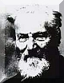

Johann Palisa
Rođen je 06. prosinca 1848. godine u tada austrijskom mjestu Troppau (sada Opava, Češka Republika), kao najstariji sin mjesnog trgovca Franza Palise i mati Katarine.
Karijera i dolazak u Pulu
Temeljnu školu i gimnaziju Paliza je završio u rodnoj Opavi. Nakon toga je 1866. godine upisao matematiku na Bečkom univerzitetu. Predavali su mu profesori Carl von Litrow, Edmund Weiss i Theodor von Oppolzer.
Početkom 1871. godine premješten je u Mornaričku Zvjezdarnicu u Puli kao predstojnik. Tu mu je glavna zadaća bila skrb o brodskim kronometrima austrijske ratne mornarice. Kako su mu ti redoviti poslovi ostavljali dovoljno slobodnog vremena, Palisa je otpočeo potragu za malim planetima.
Otkrića iz Pule
Konačno 18. 03. 1874. godine Palisa je uspio otkriti svoj prvi mali planet, koji je kao prvi otkriveni u Austriji nazvao AUSTRIA.
Prigodom posjeta Puli 1875., Car Franjo Josip I je dvjema novootkrivenim malim planetima osobno dao imena: (142) Polana i (143) Adria. Pridodamo li tome (183) Istria, u svemiru postoje tri nebeska tijela koje nose imena naših zemljopisnih pojmova.
Mali planeti (asteroidi) koje je Palisa otkrio iz Pule
Iz Beča je Palisa otkrio još 94 mala planeta, što sa onima otkrivenim iz Pule, ukupno iznosi 123 nova mala planeta. Koliko je poznato, Palisa je sve male planete otkrio vizualnim putem, dakle promatrajući "golim" okom kroz teleskop.
Osim što se posvetio otkrivanju malih planeta, Palisa je zajedno sa Maxom Wolfom sa zvjezdarnice u Heidelbergu izradio fotografski atlas neba.
U 71. godini života (1919.), Palisi je počeo slabiti vid. Preminuo je 02. 05. 1925. godine. Na mjestu gdje se nekad nalazila Palisina rodna kuća, 15.10.2000. postavljena je spomen ploča.
Tu je napisana i Palisina omiljena uzrečica: "SIC ITUR AD ASTRA" (Tako se ide k zvijezdama).
